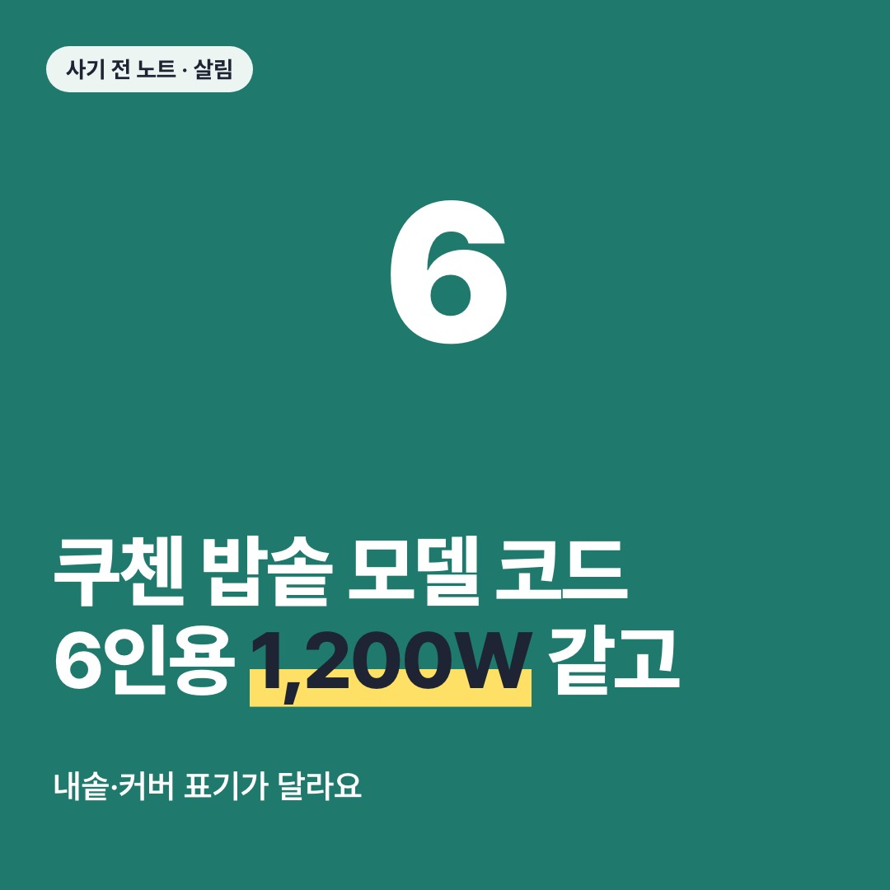
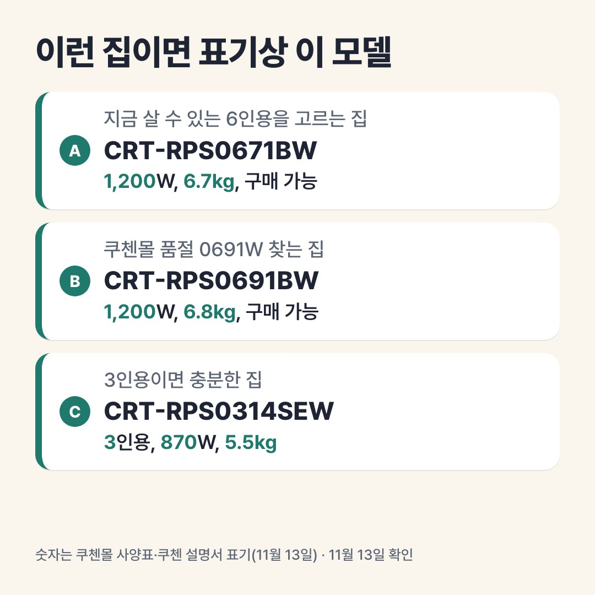

이 게시물은 쿠팡 파트너스 활동의 일환으로, 이에 따른 일정액의 수수료를 제공받습니다.
쿠첸 6인용 밥솥 0671 0691 차이와 판매 상태
쿠첸 6인용 밥솥 구매 전 질문 글에 나온 CRT-RPS0671BW와 0691W 중 지금 쿠첸몰에서 살 수 있는 건 0671BW예요. 0691W 사양을 원하면 같은 사양표의 0691BW, 3인용이면 0314SEW가 구매 가능이에요. 판매 상태는 11월 13일 쿠첸 공식몰(쿠첸몰) 기준이고, 직접 써 본 후기는 아니에요. 아래 쿠팡 가격은 와우·쿠폰 할인이 붙은 11월 14일 목록 가격이라 조건에 따라 달라요.


쿠첸 6인용 밥솥 0671과 0691은 뭐가 달라요?
0691W 상품 페이지(https://www.cuchenmall.co.kr/shop/detail.php?pno=5314B9674C86E3F9D1BA25EF9BB32895)는 구매 버튼 자리에 '품절'이 떠 있었어요. 같은 '121 플러스' 0691BW(블라썸화이트)는 구매 가능이라 비교에 더했어요. 다만 쿠팡 목록에는 0691W가 11월 14일 판매 중으로 떠 있었어요(판매자 확인 필요).
0671BW 상품 페이지(https://www.cuchenmall.co.kr/shop/detail.php?pno=980ECD059122CE2E50136BDA65C25E07)와 0691 페이지들의 기본사양을 맞대 봤어요.
- 0671BW: 6인용, 1,200W, 356×266×273mm, 6.7kg, 1등급, 내솥 Full Stainless Edge 121, 클린커버 간편 분리형 STS, 구매 가능
- 0691BW: 6인용, 1,200W, 266×356×274mm(가로·세로 순서가 바뀜), 6.8kg, 1등급, 내솥 스테인리스304, 클린커버 Full스텐커버, 구매 가능
- 0691W: 6인용, 1,200W, 356×266×273mm, 6.8kg, White, 품절. 나머지는 0691BW와 같아요
밥 메뉴·압력패킹·음성 칸은 같고, 다른 건 내솥·클린커버 칸 이름과 무게 정도예요. 두 설명서는 내솥을 모두 '스테인리스 내솥'이라 불러요. 이름이 다른 이유나 밥맛·위생 차이를 밝힌 공식 자료는 찾지 못했어요.
0671 설명서(https://cuchencdn.wisacdn.com/board//_data/blog_1/202606/16/edba00992407f20b95bb78ae5a5ecea1.pdf)와 0691 설명서는 둘 다 중량 6.7kg, 최대 취사 1.08L(6인분)로 적어 쿠첸몰 0691 페이지(6.8kg)와 0.1kg 차이가 나요.
쿠첸몰 0671W 페이지는 압력패킹을 '파워락 잠금 방식'으로 적어 0671BW와 문구가 달라요. 상품정보고시 모델명은 0671BW 페이지에 CRT-RPS1071BW, 0671W 페이지에 CRT-RPS1071W로 적혀 있어요. 판매처에 확인하세요.
CRT-RPS0671BW는 질문에 나온 두 6인용 가운데 지금 쿠첸몰에서 살 수 있는 쪽을 고르는 집에 표기상 맞아요.
쿠첸 CRT-RPS0671BW 278,870원(11월 14일 쿠팡 확인) — 가격·구매처 보기
압력밥솥은 사기 전에 설명서 경고를 뭐부터 봐요?
0671 설명서 안전 항목에서 구매 전에 알아둘 것만 옮겼고, 0691 설명서에도 같은 문구가 있어요. 3인용 0314 설명서는 보지 못했으니 받은 설명서로 확인하세요.
- 정격 15A 이상 220V 전용 콘센트에 꽂고, 한 콘센트에 여러 전기제품을 같이 꽂지 말라고 해요.
- 취사 중·직후 자동 증기 배출 장치에 얼굴·손등을 대거나 막지 말고, 특히 어린이 접근을 막으라고 해요(화상).
- 취사 중 뚜껑 손잡이를 열림 쪽으로 돌리거나 열림 버튼을 누르지 말고, 꼭 열어야 하면 [취소]를 약 1초 이상 눌러 내부 압력이 완전히 빠진 뒤 열라고 해요.
- 위쪽 공간을 1.5m 이상 두고, 김치냉장고·식기세척기·전자레인지·쌀통·다용도 선반 위에 놓지 말라고 해요.
- 어린이 혼자 쓰거나 어린이 손이 닿는 곳에 두지 말고, 인공심장 박동기 등 전기 의료 보조기구를 쓰는 분은 사용 전 의사와 상담하라고 해요.
- 클린커버는 반드시 끼우고 취사하라고 해요. 0671 설명서에는 안 끼우면 밥물이 넘치거나 쌀이 안 익을 수 있다고 적혀 있어요.
- 식혜·미역국·카레·튀김 등 지정 메뉴 밖으로 쓰지 말고, 취사 중 정전되면 내용물이 뿜어져 나올 수 있다고 해요.
- 압력패킹은 소모품으로 수명이 사용 횟수에 따라 약 1~3년이라 주기적 교체를 권해요. 내솥은 거친·금속성 수세미, 연마제, 치약으로 닦지 말라고 해요.

0310·0371과 3인용은 쿠첸몰에 있어요?
질문 글에는 CRT-RPS0310과 0371이 색만 달라 보이는데 값 차이가 큰 이유를 묻는 글도 있었어요. 두 코드는 쿠첸몰 밥솥 목록 8쪽과 설명서 목록에 없어 인원·사양을 확인하지 못했어요. 목록에는 앞 글자가 다른 CRT-TWS0310W(브레인 미니 3인용)가 있었지만 같은 제품인지는 몰라요.
3인용을 찾는다면 지금 쿠첸몰에 올라 있는 NEW 121 ME 3인용 두 모델이 있어요. 0314SEW 상품 페이지(https://www.cuchenmall.co.kr/shop/detail.php?pno=B14680DEC683E744ADA1F2FE08614086)와 0314SEBW 페이지의 기본사양이 같아요.
- 둘 다 3인용, 870W, 239×244×338mm, 5.5kg, 1등급, 풀스테인리스 304 내솥, 간편 분리형 커버, 구매 가능
- 색상만 White(0314SEW)와 Blossom White(0314SEBW)로 달라요
0310·0371 값이 다른 이유는 공식 자료에 없어 추측하지 않아요.
모델 코드 끝 글자는 어떻게 확인해요?
코드 각 자리의 뜻을 설명한 쿠첸 공식 자료는 찾지 못했어요. 상세 페이지의 모델 코드와 받은 상자 라벨을 끝 글자까지 맞춰 보세요.
CRT-RPS0691BW는 쿠첸몰에서 품절된 0691W 대신 같은 사양표 모델을 찾는 집에 표기상 맞아요.
쿠첸 CRT-RPS0691BW 243,380원(11월 14일 쿠팡 확인) — 가격·구매처 보기
쿠첸 CRT-RPS0314SEW는 3인용이면 충분한 집에 표기상 맞아요.
쿠첸 CRT-RPS0314SEW 251,790원(11월 14일 쿠팡 확인) — 가격·구매처 보기
#쿠첸밥솥 #쿠첸6인용밥솥 #쿠첸밥솥모델명 #CRTRPS0671BW #CRTRPS0691BW